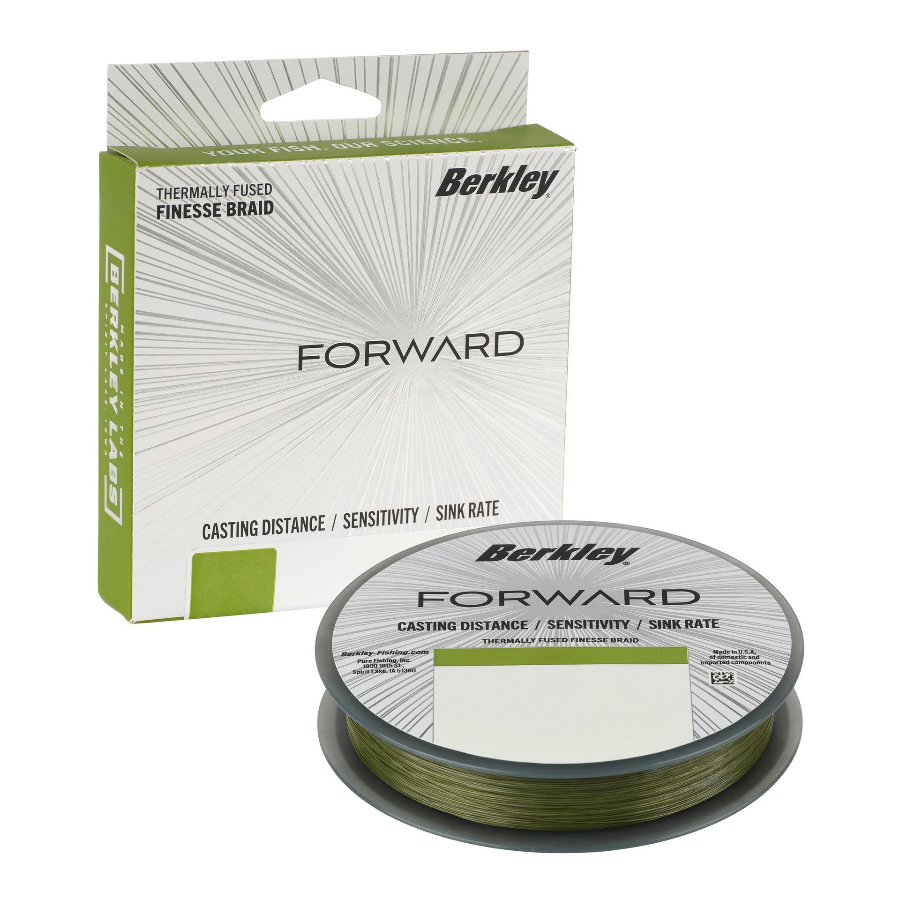

Berkley Forward Finesse Braid
Diameter chart, reel capacity & backing guide

US 150 yd filler-spool reference for the label-verified 10 and 12 lb Forward Finesse Braid options. Berkley describes a longitudinally twisted, thermally fused construction. The chart uses the actual diameter printed on each package, not the separate mono-equivalent pound rating.
- Construction
- Longitudinally twisted, thermally fused finesse line
- Listed strengths
- 10-12 lb
- Line type
- Braid main line
A documented finesse mainline setup
Forward is Berkley's braid for finesse presentations, including forward-facing-sonar fishing. The verified 10 and 12 lb options are worth evaluating on appropriately matched light tackle, with a leader chosen for the rig. Plan a working section from the 150-yard package and use backing where needed, keeping reserve for fish runs and repeated retying.
How much Forward Finesse Braid will fit?
Calculated estimates, not measured fills. Stop at the reel manufacturer's fill level even if some line remains.
Berkley Forward Finesse Braid diameter chart
US 150 yd/137 m filler packages only. The official 10 lb carton prints .007 in/.17 mm; exact-SAP 12 lb spool labels print .008 in/.20 mm. Inch/mm pairs are independently published. Mono-equivalent ratings are not breaking strength. Other strengths, 1500 yd bulk spools, and overseas 150 m products are not inferred.
| Strength | Inches | mm | Spools (yd) |
|---|---|---|---|
| 0.007 | 0.170 | 150 | |
| 0.008 | 0.200 | 150 |
Choosing your Forward Finesse Braid strength
The 10 lb Low-Vis Green carton gives .007 in/.17 mm and 150 yd. Its additional 4 lb mono-equivalent text describes a comparison rating, not a 4 lb Forward strength.
The 12 lb Low-Vis Green and Flame Green spool labels give .008 in/.20 mm and 150 yd. Their 6 lb mono-equivalent text does not establish the diameter of the separate 6 lb Forward product.
Choose the required breaking strength within the rod and lure ratings, then use Forward's own printed diameter for capacity. Do not substitute the diameter of another braid carrying the same pound rating.
Treat these two verified strengths as a limited reference. No carrier count, PE rating, or line diameter for 6 or 8 lb is derived from the product name or retailer table.
This is a source-based specification and setup guide, not a hands-on performance or aging test.
Want a guided recommendation?
Continue in the Setup WizardSame pound test, different diameters
At your selected strength
Loading diameter comparisons...
What changes with another line?
Nearby diameters in the line database
| Line | Strength | Inches | Difference |
|---|---|---|---|
| Loading line database... | |||
Backing, working line & leaders
Plan around 150 yards
A 150 yd filler package can leave unfilled space on a larger spool. Estimate backing using the working length you intend to keep, and stop at the reel maker's fill level.
Use the real diameter field
The .007 or .008 in printed diameter is the capacity input. The 4 or 6 lb mono-equivalent text is not an interchangeable line diameter and must not replace the 10 or 12 lb breaking-strength label.
Keep the leader separate
Choose any leader for the presentation and contact conditions. Its strength does not change Forward's printed mainline diameter; leave enough main line that the backing connection remains beyond the fishing distance you need.
How Much Fits on These Reels?
Estimated full-spool capacity for the Forward Finesse Braid strength selected above, with no backing. These are calculated examples, not physical tests or recommendations for every pairing.
Loading capacity estimates...
Forward Finesse Braid questions, answered
Is Forward a conventional X5 or X9 braid?
No. Berkley describes Forward as longitudinally twisted and thermally fused. This source does not establish a conventional five- or nine-carrier count, and those other products' diameters are not substitutes.
Does 4 lb mono equivalent mean this is 4 lb Forward?
No. The inspected carton is 10 lb Forward with .007 in/.17 mm diameter. The separate 4 lb mono-equivalent field is not its breaking strength. The 12 lb package similarly prints 6 lb mono equivalent.
Is the US filler spool 150 yards or 150 meters?
The inspected US labels say 150 yd/137 m. A regional 150 m package is a different package identity and is not included here.
Why are 6 and 8 lb missing?
The official US variants establish those products exist, but the inspected sources do not give a verified manufacturer diameter/package pairing for them. They remain outside this chart.
Will one filler spool fill my reel?
That depends on the reel and selected diameter. When the estimated full-spool amount exceeds 150 yd, plan appropriate backing or a different documented line supply; a package length is not a reel-capacity rating.
Specifications & sources
Sources reviewed 2026-09-13. US 150 yd/137 m filler packages only. The official 10 lb carton prints .007 in/.17 mm; exact-SAP 12 lb spool labels print .008 in/.20 mm. Inch/mm pairs are independently published. Mono-equivalent ratings are not breaking strength. Other strengths, 1500 yd bulk spools, and overseas 150 m products are not inferred. The product image identifies the family, not every selectable strength or the source edition. Match your own package before applying these estimates.
Calculations use the catalog's listed inch diameters. Published inch and millimeter values may differ slightly because of rounding.
- Berkley US Forward Braid Filler Spool Manufacturer product identity, construction, and product code/model matching. Numeric diameter metadata is blank; not the numeric source.
- Manufacturer package photograph: forward official hero Read the actual Berkley label in the photograph. Hosting site descriptions or test results are not the numeric authority.
- Manufacturer package photograph: forward 12 tw label Read the actual Berkley label in the photograph. Hosting site descriptions or test results are not the numeric authority.
- Manufacturer package photograph: forward tw flame Read the actual Berkley label in the photograph. Hosting site descriptions or test results are not the numeric authority.
- Berkley manufacturer construction guide and original photograph context Official article context; performance claims are attributed, not independently tested.